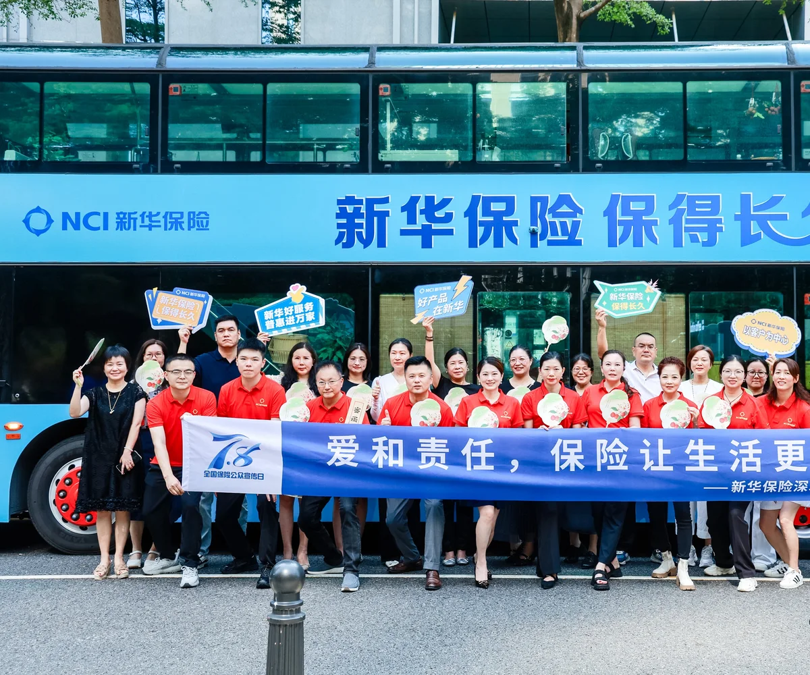
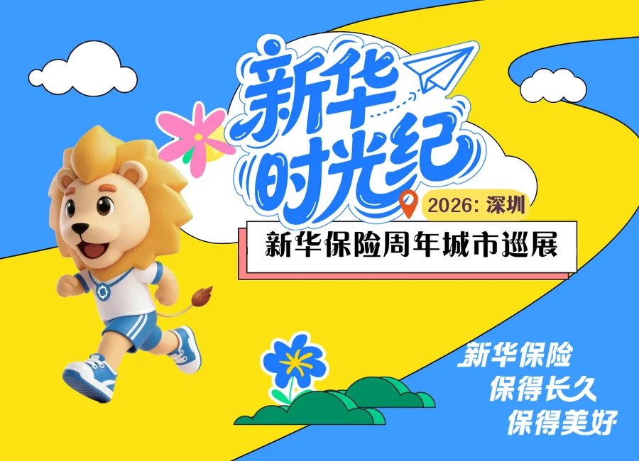
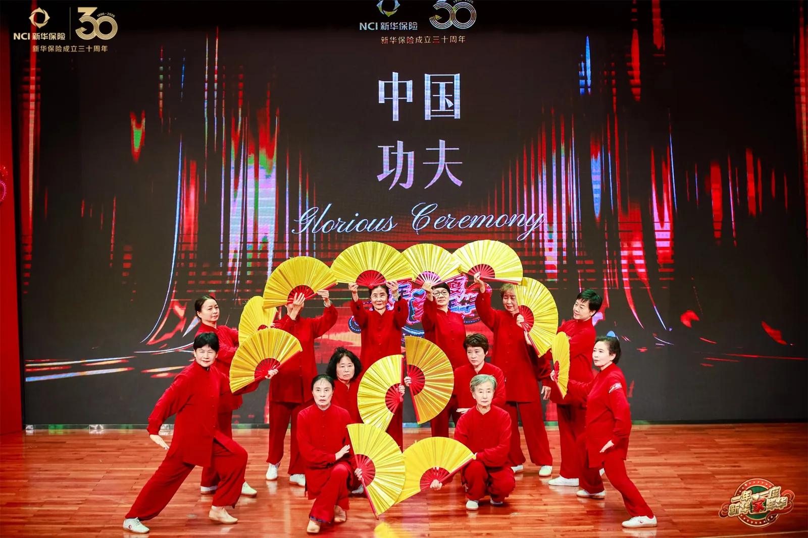
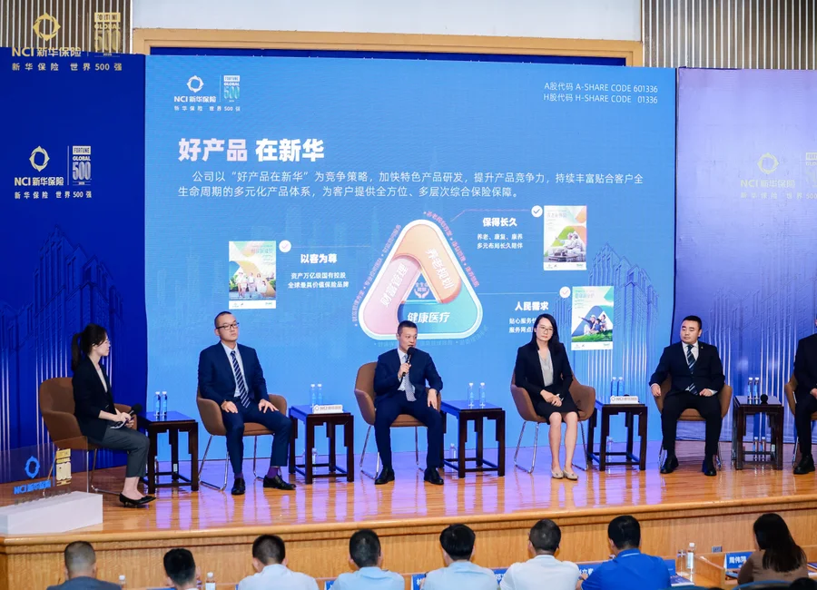
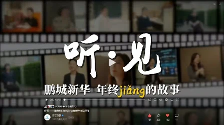
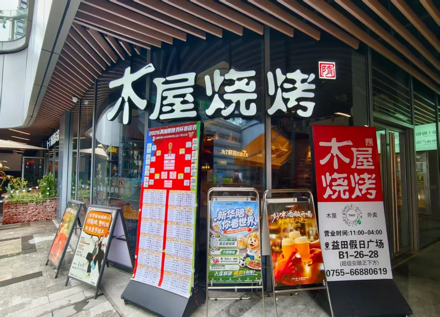
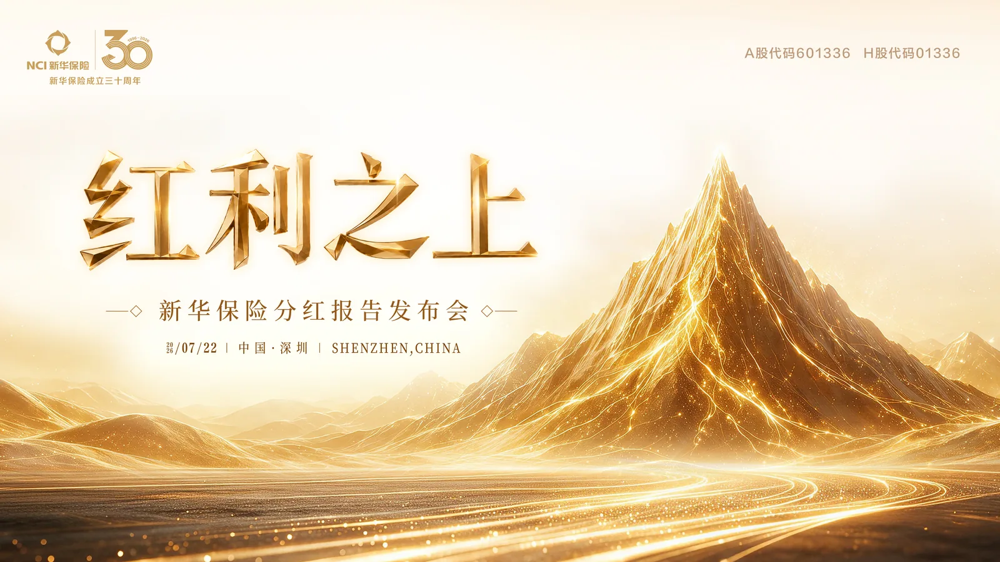
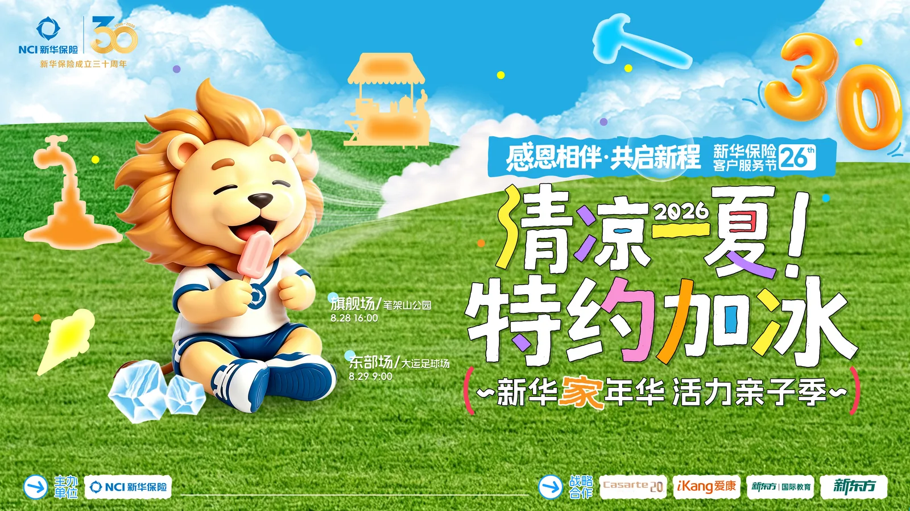

“红胖子”观光巴士
BRAND EXPERIENCE · 01“红胖子”观光巴士
- 项目时间
- 2025.07
- 我的角色
- 宣传负责，落地执行
- 核心成效
- 品牌曝光252万+；传播曝光66万+；深度触达客户300+

新华时光纪城市巡展
CITY TOUR · 05新华时光纪城市巡展
- 项目时间
- 2026.03—04
- 我的角色
- 总策划
- 核心成效
- 深度触达75.7万人次；传播曝光110万+；沉淀近1000名潜在客户线索

新华“家”年华第一季盛典
ANNUAL CEREMONY · 04新华“家”年华第一季盛典
- 项目时间
- 2026.01—03
- 我的角色
- 宣传负责
- 核心成效
- 深度触达300+客户；获《深圳特区报》报道，并投放地铁广告

中期业绩发布会
CORPORATE EVENT · 02中期业绩发布会
- 项目时间
- 2025年中
- 我的角色
- 宣传负责
- 核心成效
- 近500名嘉宾参与；获《深圳特区报》、凤凰网、南方都市报等媒体报道

跨年主题视频
YEAR-END FILM · 03跨年主题视频
- 项目时间
- 2025年底
- 我的角色
- 总策划
- 核心成效
- 自主策划拍摄，用于内部凝聚与客户传播；传递温情，播放量近万

木屋烧烤跨界联名
BRAND CROSSOVER · 06木屋烧烤跨界联名
- 项目时间
- 2026.07—08
- 我的角色
- 宣传负责，资源对接
- 核心成效
- 官微增粉1000+；官宣文近万阅读；抽奖参与1406人；门店触达2000+

分红报告发布会
DIVIDEND RELEASE · 07分红报告发布会
- 项目时间
- 2026.07
- 我的角色
- 总策划
- 核心成效
- 获南方都市报、深圳特区报、凤凰网、深圳商报报道；350名客户及准增员参与

新华“家”年华活力亲子季
FAMILY SPORTS · 08新华“家”年华活力亲子季
- 项目时间
- 2026.08
- 我的角色
- 总策划
- 核心成效
- 小红书达人宣传；深圳商报官微头条、南方都市报、凤凰网报道；两场参与人数近千人；传播数据持续更新